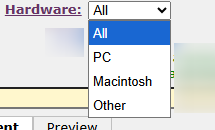

Bugzilla
文前言
意外需要正式使用了...
原本要調一調 【雜記】自架 BugZilla 那篇擴充，但發現架構太冗+那篇是雜記，因此改成開新篇。
v5.2
主文
建立 Product
建立帳號並登入後的首先：
點選上方導覽列內的 [Administration]
然後 > [Products] > [Add] a product
會看到以下畫面：

一開始有點疑惑為甚麼 Component 是必填，因此問了 Claude：
## Bugzilla 的資料結構設計
Bugzilla 的 bug 追蹤系統採用階層式架構：
- **Product**（產品）
- **Component**（元件）← 必須存在
- **Bug**（問題單）
在這個設計中，每個 bug 必須同時關聯到一個產品和一個元件。這是 Bugzilla 資料庫架構的基本要求，bug 表格中的 component_id 欄位是必填的。
## 為什麼這樣設計
### 1. 責任歸屬的明確性
元件機制強制您在組織層面就思考清楚責任劃分。每個元件都必須指定預設負責人（Default Assignee），確保每個提交的 bug 都有明確的處理人員。
### 2. 避免過於粗糙的分類
如果只有產品層級，大型專案會面臨所有 bug 都混在一起的問題。強制使用元件可以防止這種情況，促使團隊進行更細緻的問題分類。
### 3. 通知機制的精準度
元件層級的 CC 清單和負責人設定，讓相關人員只接收到他們關心的領域的通知，避免資訊過載。
## 實務上的應對方式
如果您的專案確實很小或很簡單，不需要複雜的分類，可以採用以下策略：
### 最簡方案
建立一個通用元件，例如：
- 元件名稱：「General」或「Default」
- 描述：「一般性問題」或「未分類問題」
這樣至少滿足系統要求，之後如果專案成長需要更細的分類，再新增其他元件即可。
### 實際考量
即使是小專案，通常還是能找到基本的功能區分，例如：
- Frontend / Backend
- UI / API / Database
- Documentation / Code
這樣的基本分類對後續問題追蹤和統計分析也會有幫助。
## 結論
Bugzilla 強制要求元件不是為了增加複雜度，而是為了確保問題追蹤的品質和可維護性。這是系統設計的核心理念之一。如果您的使用場景真的非常簡單，建立一個預設的通用元件就能滿足需求，不會造成太大負擔。
因為個人還沒預備好要細分，因此先給名字「Default」。
[version] 欄位放上該系統目前已釋出的最新版本 (先簡單打個 1.0.0)
[Default Assignee] 必填，所以先填了自己。(方式是打上自己的帳號，打到一部分的時候系統會自動跳出自己的下拉選項，選擇就好)
[Default CC list] 非必填，個人還是選擇填自己
其他維持預設。
填寫結束後點選 [Add]。
Component 帶模板
為了讓別人方便依照我想要的格式，決定改 Component 成兩個：
Feature、Bug
這樣就可以各自給模板了！

回報 bug
點選右上角的 [New] 進入下圖頁面：

選擇要回報的 Product 進入下圖頁面：

先來了解一下 Severity 吧：

How severe the bug is, or whether it's an enhancement.
也就是 bug 的嚴重程度 or 純希望增強的功能。
(以下名詞解釋都有參考網路)
- blocker:
- 完全阻止使用或測試系統 4
- critical:
- major:
- normal:
- 普通 2
- minor:
- trivial:
- 外觀或風格上的問題，對功能影響極小或沒有影響。 4
- enhancement:
- 不急著這個開發階段修正的小問題 1
Hardware

PC: 應該可以認知為 Windows 相關產品？
Macintosh: 查網路得知是 Mac 5
Other: 安卓的手機平板應該就填這裡了
其他欄位
選擇想要回報的 [Component] 及 [Version]
[Summary]
如果有在回報 GitHub 之類的 issue 應該大概都知道要寫啥
總之就是短小精煉 & 方便被後來人搜尋到關鍵字。
以及內部公司使用記得界定好模板寫法。
輸入期間底下會多出 [Possible Duplicates]，可以檢查一下有沒有類似的回報避免重複回報：

[Description]
似乎沒有支援 Markdown 語法？
[Attachment]
要附上截圖啥的好地方。
點選 [Add an attachment] 會得到下圖：

看檔案大小限制，應該只能丟截圖。
(略為翻了一下以前的影片檔，6秒就4千多kb了)
刪除 bug
ref: How To Delete Bugs in Bugzilla – devZing Blog
官方建議是不要刪除，但我加了一個測試 email 有沒有寄信到我這裡的 bug 要怎麼刪除？
- 上方導覽列 [Administration] > [Parameters] > [Administrative Policies]
- 找到參數
allowbugdeletion，改成 [On]，然後 [Save Changes] - 接下來將該 bug 指派給新的 Component (這裡我如同參考網站內的作法，新增一個
Trashcomponent) - 刪除該 component

- 把參數改回 [Off] > [Save Changes]
要注意的是該參數的描述：
The pages to edit products and components can delete all associated bugs when you delete a product (or component). Since that is a pretty scary idea, you have to turn on this option before any such deletions will ever happen.
(在編輯產品及子產品的頁面刪除一項產品或子產品時，可以刪除所有相關的 bug。)
刪除該 component 會出現提示：

所以如果可以的話，請不要刪掉 bug...
UPDATE LOG
114. 12/02 開新篇